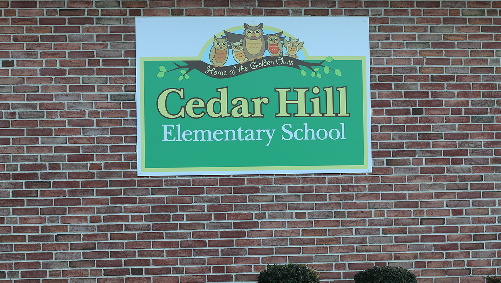

info
Cedar Hill Elementary school (CHS)) is located in Basking Ridge, New Jersey
Q&A
CHS news:
-

Cedar Hill, in partnership with its community, is a child-centered school where everyone works interdependently to create an exciting learning environment where students are: actively engaged in "rigorous and relevant work;" challenged to achieve in line with their potential; nurtured and supported to develop intrinsic motivation and a positive self-concept; recognized for a variety of measurable achievements; guided in the development of good character and responsible citizenship.
-
Cedar Hill School is situated on land which was once the property of a succession of wealthy families: Owen, Lee, Bissell, and Astor. The original 100 acre plot extended to the northern boundary of Homestead Village and included what is now War Memorial Field and the properties of Cedar Hill School and Ridge High School. Samuel Owen, a pharmaceutical manufacturer and gentleman farmer built the 20 room manor house (which is now the Bernards Township Municipal Building) on this property in 1912. They called their home Cedar Hill and their farm, Cedar Hill Farm. The peach orchards on the farm were renowned for producing enormous fruit. In 1940 the Owen estate sold the property to Mr. and Mrs. George Ludlow Lee Sr. They continued operation of the flourishing fruit farm. In 1946 the tract was divided and sold to the Bissells and John Jacob Astor. In the mid-1950s the Lees donated 60 acres of land to Bernards Township Board of Education to build Cedar Hill School and Ridge High School and their associated athletic fields. The High School teams were dubbed The Red Devils (even though their colors were green and white) because Mr. Lee was owner and president of the Red Devil Tool Company in Irvington! John Jacob Astor lived in the estate occasionally and his son, William, granted permission to the Basking Ridge Gun Club to hunt pheasants, woodchucks, rabbits and deer on the property. Astor also raised cows on the farm. Today the picturesque real estate is almost entirely surrounded by public and semi-public lands. To the rear is the Board of Education property; across Collyer Lane is the St. James Church and School; and on the opposite end of South Maple Avenue is Lord Stirling Park, Riding Stables, and the Environmental Center of the Somerset County Park Commission, covering almost 1,000 acres. This information was summarized from the brochure "Bernards Township Hall" written by June Kennedy, Township Historian.
Places
Fun

Great place to eat where kids get to socialize. (exept in Corona)
nice